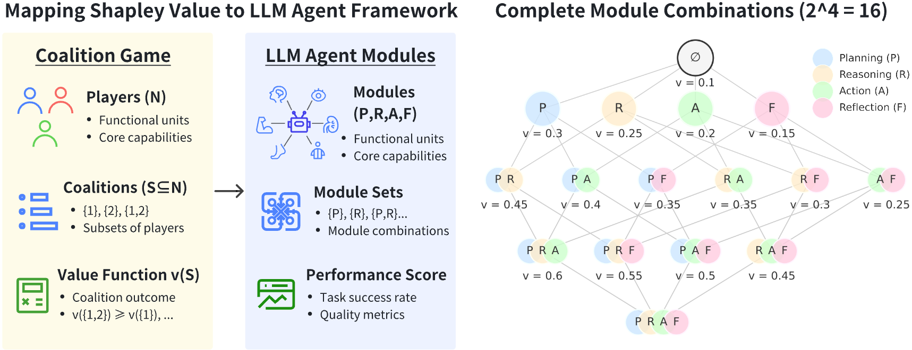
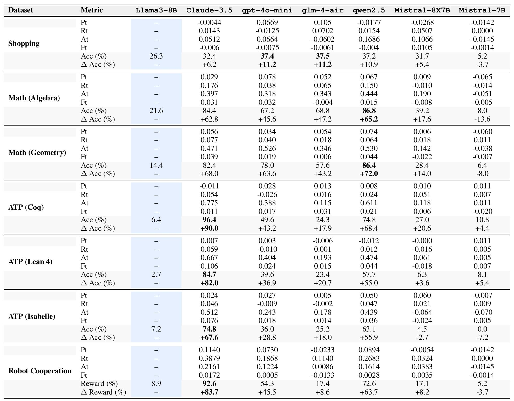

Introduction
CapaBench is a novel evaluation framework leveraging Shapley Value from cooperative game theory to measure the contributions of individual modules within modular Large Language Models (LLMs). By quantifying these contributions, CapaBench facilitates systematic optimization and enhances the interpretability of agent architectures.
The framework evaluates Planning, Reasoning, Action, and Reflection capabilities by analyzing their individual and synergistic impacts on task performance. With a comprehensive dataset of over 1,500 multi-round, practical task scenarios, CapaBench enables robust and generalizable assessments tailored to real-world applications.
Framework Overview
Agent Workflow

The modular architecture of CapaBench consists of four key components:
- Planning: Decomposes complex tasks into structured subtasks, enabling efficient resource allocation.
- Reasoning: Uses logical inference and contextual understanding to determine appropriate actions.
- Action: Translates cognitive processes into executable operations, ensuring effective task execution.
- Reflection: Analyzes outcomes to iteratively improve performance through feedback and adjustments.
This workflow allows agents to tackle diverse and complex scenarios, from e-commerce to collaborative robotics.
Shapley Value Illustration
The Shapley Value, a cornerstone of cooperative game theory, provides a mathematically rigorous method for quantifying the marginal contributions of individual modules in an agent's architecture. This ensures fair attribution of credit based on all possible permutations of module combinations.
For example, in a task requiring Planning, Reasoning, and Action, the Shapley Value captures the unique contribution of each module and their interactions. This enables a deeper understanding of how modules work together to drive performance.
Dataset Construction
| Daily Activities | Computation | Role Control | ||||||
|---|---|---|---|---|---|---|---|---|
| Shopping | Navigation | Math | Theorem Proving | OS | Robot | Game | ||
| Planning | Task Steps | ✔ | ✔ | ✔ | ||||
| Resource Constraints | ✔ | ✔ | ✔ | ✔ | ||||
| Reasoning | Logical Validation | ✔ | ✔ | |||||
| Knowledge Inference | ✔ | ✔ | ✔ | |||||
| Text Understanding | ✔ | |||||||
| Action | Environment Interaction | ✔ | ✔ | ✔ | ✔ | ✔ | ✔ | ✔ |
| Reflection | Failure Analysis | ✔ | ✔ | ✔ | ✔ | ✔ | ✔ | ✔ |
Experiment Results
Selected Results Across Datasets
The image above highlights results for selected models and datasets. Blue cells represent baseline model metrics, and bold entries indicate the best results achieved for each task. Additional analysis confirms that module configurations with higher Shapley Value contributions consistently outperform others.
Key Findings
Based on the experimental results, we derived the following key insights:
Cross-Task Model Performance Comparison
Models such as Claude-3.5 excel in complex logical reasoning and collaborative tasks, including formal verification (e.g., Coq, Lean 4, Isabelle) and robot cooperation. In contrast, open-source models like Qwen-2.5 and Mistral-8X7B demonstrate strong performance in simpler tasks like shopping and algebra but underperform in cognitively demanding scenarios. These results highlight that while open-source models succeed in specific domains, proprietary models often dominate in tasks requiring advanced reasoning and collaboration.
Module Contribution Patterns
Module contributions vary significantly by task, as summarized below:
- Online Shopping Tasks: The Planning ($P_t$) and Reasoning ($R_t$) modules dominate, emphasizing strategic decision-making and logical reasoning.
- Math Solver Tasks (Algebra and Geometry): The Action ($A_t$) module is critical, especially in geometry, where precise execution is key.
- Formal Verification Tasks: The Action ($A_t$) module is dominant, particularly for formal language tasks like Coq, requiring precision.
- Robot Cooperation Tasks: The Reasoning ($R_t$) module plays the largest role, supporting coordinated multi-agent actions.
- Operating System Tasks: The Reasoning ($R_t$) module is crucial for dynamic problem-solving within OS environments.
Ability Transfer Patterns
Foundational skills like planning, reasoning, and execution generalize across related tasks. For instance:
- Proficiency in the Action ($A_t$) module for Formal Verification translates into strong performance in math
problem-solving tasks like algebra and geometry.
- Planning ($P_t$) abilities in Shopping tasks transfer to Robot Cooperation due to shared requirements for
multi-step coordination and optimization.
Impact of Model Architecture and Training Strategies
Model architecture and training strategies often outweigh raw parameter size in determining performance. For
example:
- Qwen-2.5 outperforms in algebra and geometry tasks despite fewer parameters, thanks to its
optimized Action ($A_t$) module.
- Mistral-8X7B, though larger in size, underperforms in several tasks, underscoring the
importance of innovative design and training over sheer scale.
Citation
@article{capabench2025,
title={CapaBench: A Game-Theoretic Evaluation Benchmark for Modular Attribution in LLM Agents},
author={Yingxuan Yang and others},
journal={Conference Name},
year={2025},
}